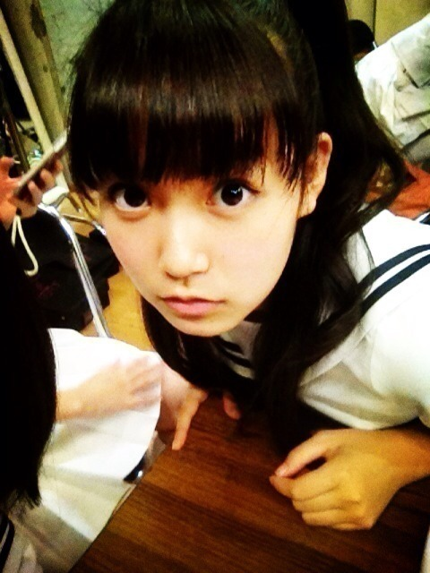
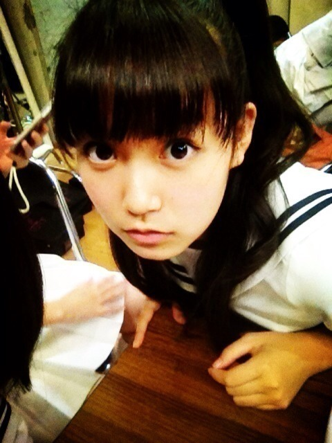

| 2013/08 01 Thu | ひめたん(*>ω<*)そ の320 |
１年のうち３日くらい
究極に、究極に眠い日ってあるじゃないですかー
あんなに寝たのに
まぶたがおもいなにゆえ(´・ω・｀)的な
この前それがきたのー

るんるんが撮ってくれたのー
なるほど眠いと人中がいつもより
くっきりしてるね( ^ω^ )
これが究極に眠い顔ですみなさん
目はね常に頑張って開いてる感じ。
この前は生写真撮影で
またいっぱい衣装着させてもらいましたー
生写真たのしい(〃ω〃)
今回は写めもいっぱい撮ったので
生写真が発売されるたびに解禁していくので
楽しみに待っててくだっさーい♪
さらに発表されましたね！語彙力検定！
３級無事合格しましたよーひっふー
賞状と一緒に２級の本いただいたので
もっとお勉強がんばりまっすー
受けた方おるんかな( ^ω^ )どうでしたー？
秋にもあるらしいので
みなさんうけよー
8/4の全握
握手レーンのペアはまいまいです！
まいまいと組むのは初めてなので
とってもとっても嬉しいよー(*/ω＼*)
ほのぼのレーンの予感だね☆
まいまい、まいみんのみなさん
よろしくお願いします！
究極に、究極に眠い日ってあるじゃないですかー
あんなに寝たのに
まぶたがおもいなにゆえ(´・ω・｀)的な
この前それがきたのー

るんるんが撮ってくれたのー
なるほど眠いと人中がいつもより
くっきりしてるね( ^ω^ )
これが究極に眠い顔ですみなさん
目はね常に頑張って開いてる感じ。
この前は生写真撮影で
またいっぱい衣装着させてもらいましたー
生写真たのしい(〃ω〃)
今回は写めもいっぱい撮ったので
生写真が発売されるたびに解禁していくので
楽しみに待っててくだっさーい♪
さらに発表されましたね！語彙力検定！
３級無事合格しましたよーひっふー
賞状と一緒に２級の本いただいたので
もっとお勉強がんばりまっすー
受けた方おるんかな( ^ω^ )どうでしたー？
秋にもあるらしいので
みなさんうけよー
8/4の全握
握手レーンのペアはまいまいです！
まいまいと組むのは初めてなので
とってもとっても嬉しいよー(*/ω＼*)
ほのぼのレーンの予感だね☆
まいまい、まいみんのみなさん
よろしくお願いします！

 「ひめたんと巡る東京グルメバスツアー」
「ひめたんと巡る東京グルメバスツアー」
の集合場所はどこですか？
どこがいーでーすかー
そんなに遠くないところなら
迎えに行ってくれると思うよドライバーさん！
ブラックひめたんって何ですか？震え声
うーん死語かなー(´・ω・｀)てへぺろ
ブラックひめたんって何ですか。え。
千代田線で車体一面青い電車は
見たことある？
みたことなーい！
みてみたーい！
もし、いきなりワープできるとしたら、
どこに行きたい??
お菓子のおうちにいきたいなー
涼しいと聞いたので北海道にもいきたいな
いやーもうちょいで行きますやん(｀・ω・´)
最近、まあやや、いくちゃん、ひなちまが
背が伸びてる気がするけど、
ひめたんも伸びてたりするのかな？
159で止まっておるよー
２年前はまあやのが背ちっちゃかったのに
見事に抜かれましたよー成長！
わたし、ひめたんが世界1大スキなんだけど
ひめたんは迷惑じゃない？
ひめたんに世界一ってゆっちゃって
ほんとにいーのー？嬉しーよー(*^ω^*)
迷惑なわけないようっ
ひめたんも好きだよおおー///
夏が来たんだなぁーって感じるのは
どんな時（どんなもの）ですか？
日照時間が長いよねー
19時すぎても空が明るいなーなんて思うと
ああ夏やと。ねー
ゆーて東京は広島より日が沈むのはやいけどね
笑顔がたえない男性と
普段は無口で愛想無いけど
たまに笑顔になる男性は
どちらが日芽香に合いますか？
どっちかなー
いつもにこにこしていてほしいなー
とは思うけどなー(*^ω^*)
もし乃木坂に入ってなかったら
どんな夏休みを過ごしたいですか？
バイトしてたと思！
ぐーたらぐーたらしてたんじゃないかなー
おっそっろっしーふへへ
自分では自分の事をボケだと思う？
それともツッコミだと思う？
えっとーうーんわからんなー
ツッコむなんてことはないので、それなら...
でもボケてるつもりもないけどなー(´・ω・｀)
どんなクルマが好きですか？
自分で運転するなら
コンパクトでピンクの車がいーです！
乗るんならクッションが気持ちいやつが好き、
見るんならなんでも( ω )
このメンバーのいいなぁって
キャッチフレーズはありますか？
さゆにゃーんの
あなたのはーとをくださゆにゃーんは
好きよ♪かわいーもん///
自分でかった今までで一番高いものは？？
うげーなんだろー(´・ω・｀)
そうだなーお化粧品かなー
ひめたん＆すぅちゃん姉妹は、
家ではどんなお話してますか？？
いろいろ話すよー( ^O^ )
今日あったこと、お仕事のこと、なんでもー
じぶんの好きな食べ物と
気になるけど食べたことのない食べ物
どっちを買う？？？
好きなものよそりゃー！
冒険はしないひとです怖いからーふふふー♪
今日はNOGI BINGO の収録に
参加させていただきましたよー！
オンエアをお楽しみに☆がんばりました！
(＊´・ω・＊)
コメント(249)
2013/08/01 23:12